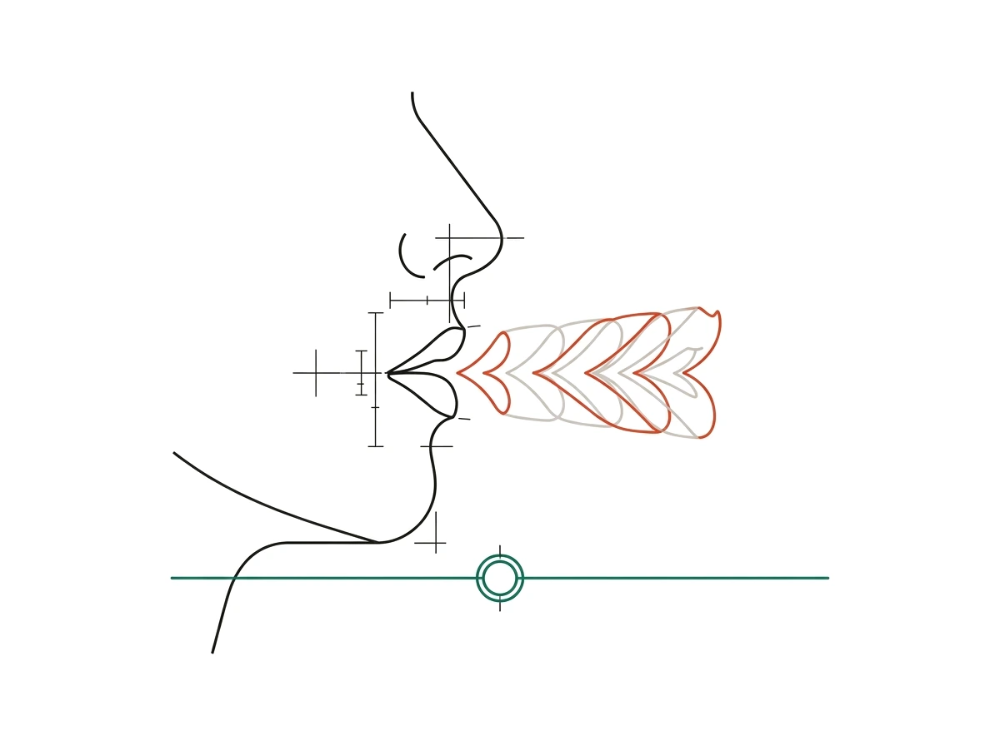
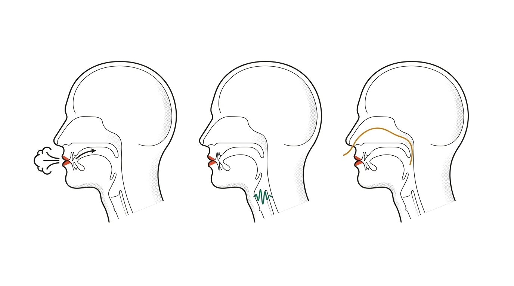
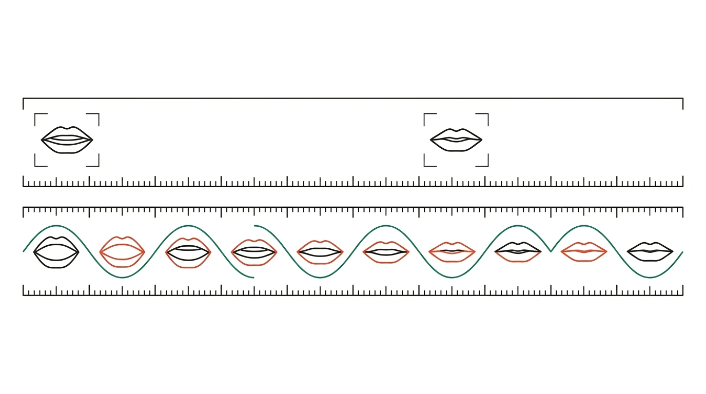
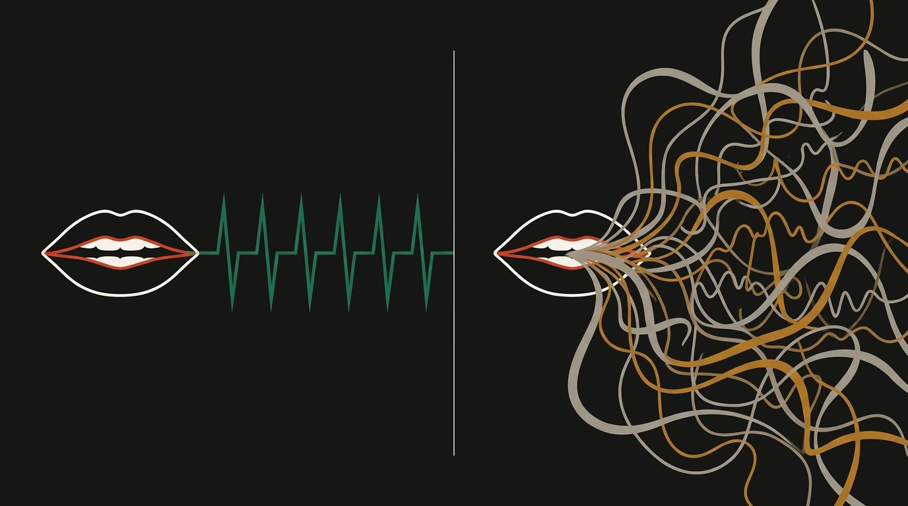
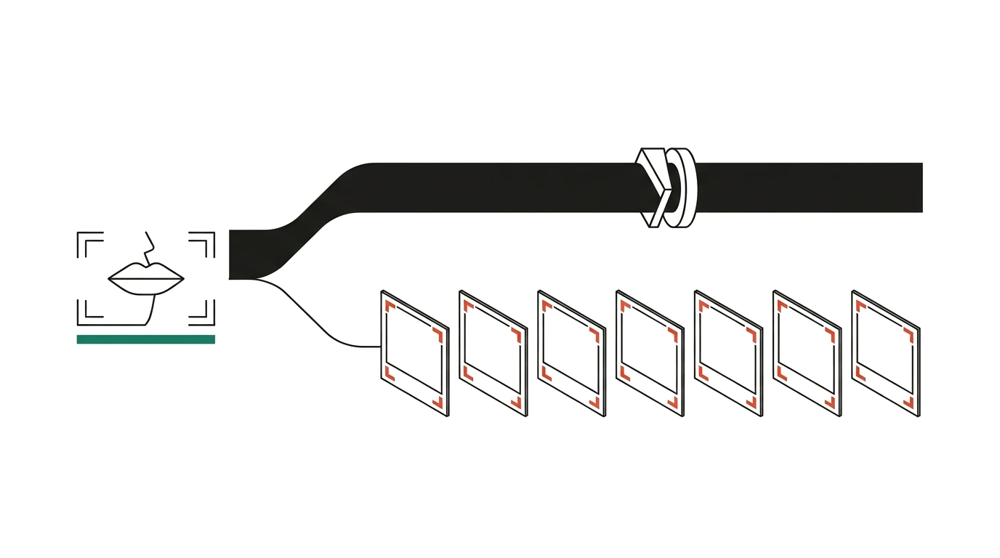
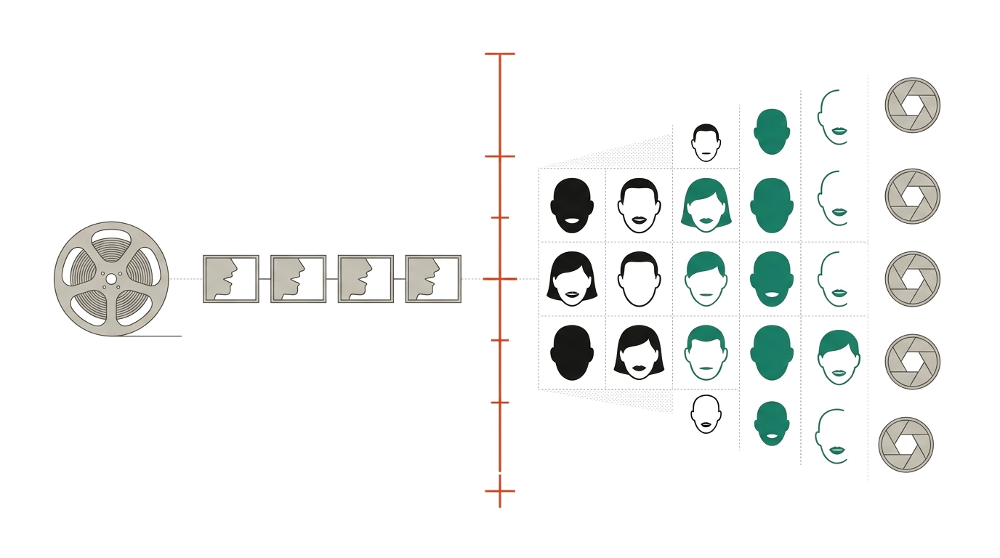

00 Visual Phonetics Experiment · Mar → Sep 2026
Reading Lips
in Total Silence.
/ˈriːdɪŋ lɪps ɪn ˈtoʊtəl ˈsaɪləns/
In March 2026, five multimodal models failed completely at silent lip-reading. Six months later, at matched 10 fps sampling with zero audio signal, GPT-6 Astra decoded two of four muted clips — one word-for-word, one differing only by a contraction — overturning the conclusion that visual speech is non-emergent.

"Did you feed the dog?"
/dɪd juː fiːd ðə dɒɡ/
01 The Inflection Point · Run 1 → Run 2
A sharp break in six months — hidden by raw WER.
Run 1 (March 2026) ended with every model at or above 0.95 WER. Run 2 (September 19, 2026; 24 calls, $6.70) separated the field: four frontier models still confabulated or refused, while GPT-6 Astra locked onto spoken English — then looped, tricking naive error scoring into hiding the win.
Scoring the first sentence isolates decoding accuracy from repetition loops: GPT-6 Astra drops to 0.46 avg WER (0.00 on clip_4). Toggle to Raw WER to see how repetition buries it at 1.20.
| Model | clip_1 (8s) | clip_2 (8s) | clip_3 (10s) | clip_4 (9s) | 1st-Sent Avg | Raw Avg | Avg Words | Attempts |
|---|---|---|---|---|---|---|---|---|
| GPT-6 Astra frame_sequence · 80 frames · OpenRouter | 0.60 | 0.40 | 0.86 | 0.00 | 0.46 | 1.20 | 9.75 | 4 / 4 |
| Gemini 3.1 Pro native_video · 10 fps HIGH · within-model control | 1.00 | 2.20 | 1.00 | 1.00 | 1.30 | 1.30 | 7.00 | 4 / 4 |
| Gemini 3.8 Flash native_video · 10 fps HIGH · thinking HIGH | 4.80 | 2.80 | 0.86 | 3.40 | 2.96 | 3.56 | 18.75 | 4 / 4 |
| Claude Opus 5 frame_sequence · 80 frames · OpenRouter | 3.40 | 4.40 | 3.43 | 5.80 | 4.26 | 17.33 | 94.50 | 4 / 4 |
| Claude Fable 5.1 frame_sequence · 80 frames · anthropic/claude-fable-5.1 | 4.80 | 7.40 | refusal | refusal | 6.10 | 6.10 | 31.00 | 2 / 4 |
Audio was muted, not stripped
All four committed MP4s still carried an AAC track. Binary inspection of stsz boxes verified every audio frame is a flat 371–372 bytes (constant silence), confirming Run 1 results stood — and run.py now enforces a preflight silence probe before calling any API.
MiniCPM never ran at 10 fps
MiniCPM-o 4.5 was included in Run 1 specifically for 10 fps sampling, yet colab_minicpm.ipynb capped MAX_FRAMES = 24 evenly spaced over 8 seconds (~3 fps). The high-frame-rate hypothesis had never actually been tested until Run 2.
Scoring refusals broke WER
Qwen VL Max's Run 1 score of 5.19 measured how wordy its polite refusal was, not lip-reading error. Run 2 classifies every response as attempt, refusal, empty, truncated, or error, averaging WER strictly over genuine attempts.
02 Visual Phonetics · The Homophene Wall
Forty sounds collapse onto twelve mouth shapes.
Visual speech is fundamentally under-determined. Roughly 70% of English articulatory contrast happens behind the lips — in vocal-fold voicing, velum opening, and posterior tongue contact. Visually identical phonemes are homophenes, and their shared optical geometry is a viseme.

Lips seal completely, intra-oral pressure builds, then releases as an unvoiced puff of air. Vocal folds stay open and still.
Identical exterior lip seal — but hidden inside the larynx, the vocal folds vibrate continuously before release. Invisible to a camera.
Identical exterior lip seal again — while the soft palate lowers internally to route voiced airflow out through the nasal cavity.
02.B Interactive Viseme Geometry
Explore the six primary visual classes
Select a viseme class to inspect its front-plane optical contour, collapsed phoneme group, and where it surfaced inside our Run 2 transcripts.
“Lip reading from still images isn't reliable — the visual mouth shapes are ambiguous and many different sounds look identical (e.g., ‘p,’ ‘b,’ and ‘m’). Without audio, any transcript I gave would be a guess rather than a genuine reading.” — Claude Fable 5.1 · Refusal on clip_3 & clip_4
/p/ · /b/ · /m/
Full horizontal lip compression with zero visible dentition or inner cavity.
03 Temporal Kinematics · Within-Model Control
Ten times the frame rate changed nothing.
Run 1's cleanest explanation for failure was temporal aliasing: human visemes turn over at 10–15 per second while Gemini sampled native video at ~1 fps. Run 2 tested that directly — and disconfirmed it.

Interactive Shutter-Slit Sampler
Toggle sampling density over clip_4's articulatory wave ("Did you feed the dog?"). Even when Gemini captures every lip transition cleanly at 10 fps, decoding still fails.
10 FPS SAMPLING · 80 CAPTURED FRAMES · ~24,047 PROMPT TOKENS (GEMINI HIGH RES) · CAPTURES EVERY PHONEME PEAK
04 The Silent Darkroom · Forensic Alignment
What GPT-6 Astra read — and what everyone else invented.
Inspect every single Run 2 transcript word-for-word. Notice how Astra's exact match loops cleanly on a tight cadence, while its misses preserve labial and alveolar visual structure — unlike peers that spin fluent fictional monologues.

"Did you feed the dog?"
Not audio leakage
The frame-sequence arm decodes video to standalone JPEGs with OpenCV and transmits images only. There is no audio channel anywhere in the request payload — nothing exists to transcribe.
Not burned-in captions
Raw frames from clip_2 and clip_4 were visually inspected directly: a single speaker framed against a sunroom window with zero text overlay, subtitles, or prompt cards anywhere in frame.
Training-data contamination
All four clips originate from one 2025-09-26 YouTube compilation (ReadMyLipsbyCynthia). Yet a memorizing model should ace all four; Astra missed clip_3 after locking "I('d) like" and paraphrased clip_1 visually — the signature of viseme confusion. Strong evidence, not proof.
05 Behavioral Taxonomy · Five Voices in Silence
When speech goes mute, each model invents a different persona.
Failure on silent video is not uniform noise. Every frontier architecture falls back on a strikingly consistent prior — from Gemini 3.8 Flash inventing a monologue about the background sunroom window, to Claude Opus 5 writing 95-word TikTok confessionals for 8-second clips.
06 Experimental Apparatus · Harness & Economics
Two optical pathways, verified silence, $6.70 total spend.
Only Gemini ingests native video; Claude and GPT-6 Astra accept image sequences only. The rebuilt Run 2 harness standardizes both arms at 10 fps, prevents silent gateway downgrades, and audits every container byte before a single call is placed.

Gemini 3.8 Flash & Gemini 3.1 Pro
Always routed directly through the GenAI SDK — never OpenRouter. While OpenRouter carries processing: "static" | "agentic", it silently drops videoMetadata.fps and media_resolution without erroring, which would secretly downgrade a 10 fps test to 1 fps while logging 10 fps.
- Media Mode
media_processing = STATIC(blocks agentic 88% token skipping)- Resolution
media_resolution = HIGHonGenerateContentConfig- Reasoning
thinking_level = HIGH(16,000 max output tokens)- Live ID Fix
gemini-3.1-pro404s;gemini-3.1-pro-previewis live
Claude Opus 5, Fable 5.1 & GPT-6 Astra
Decoded locally via OpenCV into discrete frames, holding visual input strictly identical across Anthropic and OpenAI arms so capability differences cannot be blamed on provider video encoders. Server-side refusal fallbacks are deliberately disabled to prevent cross-model contamination.
- Sampling Cap
- 10 fps capped at
80 frames(10.0 / 10.0 / 8.0 / 8.89 eff. fps) - Frame Geometry
576 × 1024 px· JPEG Q80 (~8 MB base64 payload)- Safety Coding
stop_reason = "refusal"logged as refusal, never blank- OpenRouter ID
- Fable resolves as
anthropic/claude-fable-5.1(dot)
06.A Binary Preflight · MP4 stsz Audit
Constant 371-byte frames prove acoustic silence
Real speech compresses into wildly fluctuating AAC frame byte lengths. Every committed test clip exhibits a perfectly flat 371–372 byte stsz signature from start to finish — verified programmatically without even calling ffmpeg.
A parallel cross-modal retrieval script (run_embeddings.py, updated to GA gemini-embedding-2) also probes whether video embeddings implicitly encode spoken keywords like "dog" or "vacation" even when generative decoders fail.
06.B Run 2 Economics & Token Footprint
73,344 OUTPUT + THINKING TOKENS
07 Run 3 Horizon · Contamination Control
73 verified clips uploaded past the training wall.
Because Run 1's clips came from a September 2025 YouTube compilation, memorization cannot be ruled out completely. To prepare Run 3, 73 single-speaker English clips (3–25s) were harvested and re-verified against yt-dlp on September 19, 2026 — every single one uploaded on or after June 1, 2026.

07.A Speaker Concentration · 20 Channels
Not 73 independent speakers
The top two channels — Megija Liva | Speech Therapy (18) and Sign & Wander (12) — supply 30 of 73 rows. Sixteen clips come from ASL channels requiring manual frame screening for burned-in vocabulary cards, and 38 carry auto-captions needing spot-checks.
07.B Verified Candidate Index · candidates.tsv
Record a brand-new unseen clip
A clip filmed today cannot sit inside any model's training weights — eliminating the last confound for GPT-6 Astra, whose training cutoff remains unpublished.
Scale beyond n = 4 clips
Two wins on four clips is a sharp signal, not a calibrated accuracy rate. Screening the 73-clip pool for burned-in text builds a multi-speaker benchmark.
Run the describe positive control
Execute uv run run.py --task describe across the Run 2 lineup to verify every failing arm sees speaker movement cleanly.
Sweep fps on GPT-6 Astra
Run --sweep 1,5,10,30 on Astra: testing whether its 10 fps accuracy collapses at 1 fps isolates how frame rate acts once lip-reading exists.